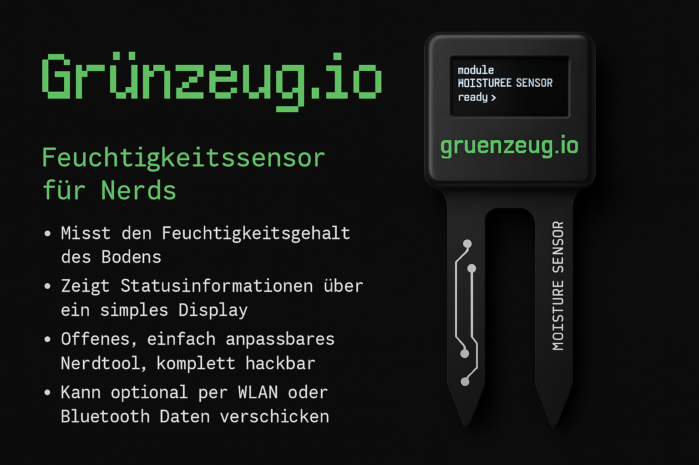

user@zeug.io:~$ sudo apt install gruenzeug-smart-garden -y
[✔] Lade Paketliste…
[✔] Abhängigkeitsbaum wird aufgebaut…
[✔] Lese Statusinformationen…
> Modul: Bodenfeuchte erkannt
> Modul: Temperatur & Luftfeuchte erkannt
> Modul: ePaper Display geplant
> Modul: MQTT-Verbindung geplant
> Modul: Akkuversorgung konfiguriert
> Modul: OTA-Update-System vorbereitet
> Modul: Pflanzen-Vorlagen System geplant
> Modul: Nerd-Modus aktiviert
> Vision: Reparierbar. Modifizierbar. Dokumentiert.
> Ziel: Smarter Garten – ohne Abo, ohne App, ohne Cloud.

Installation abgeschlossen.
Starte System…
user@zeug.io:~$ █
← zurück zur Nerd-Übersicht